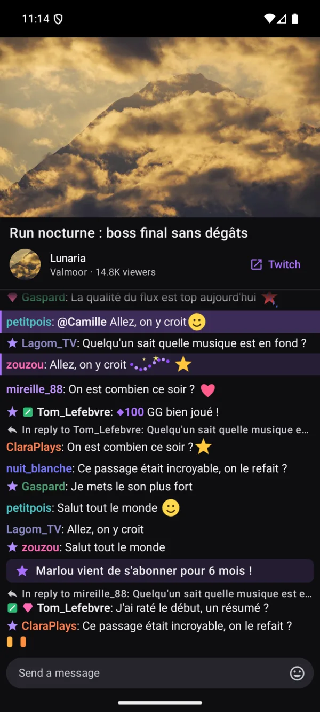
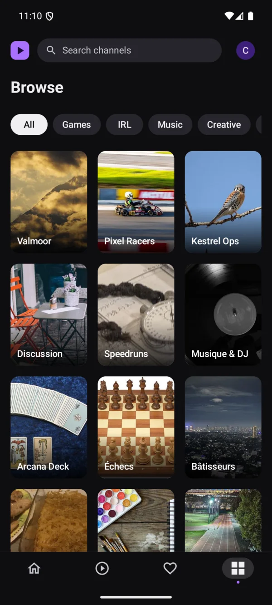
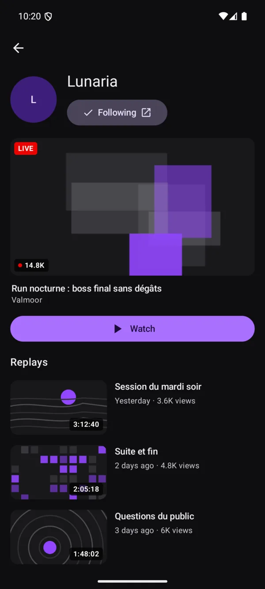
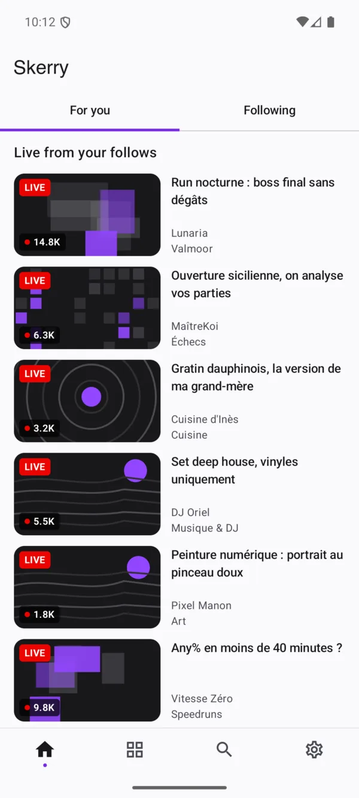
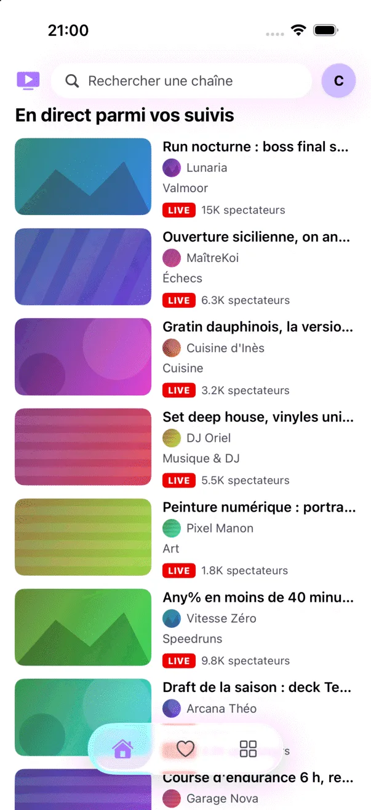
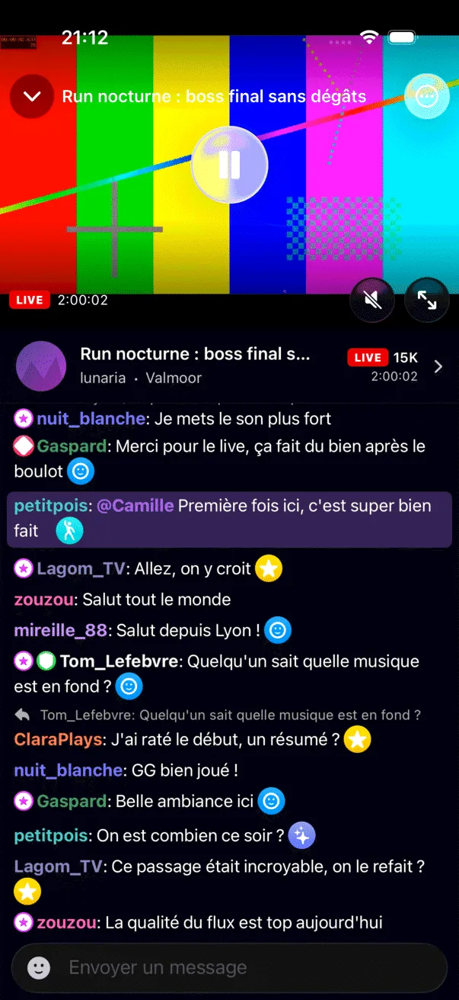
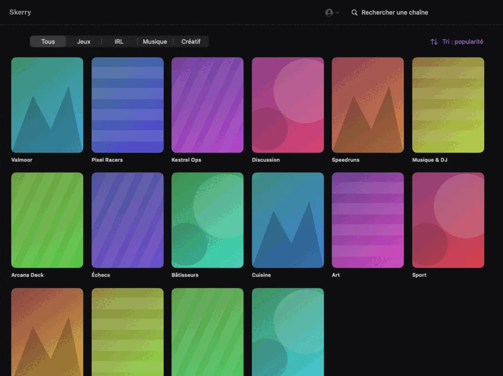
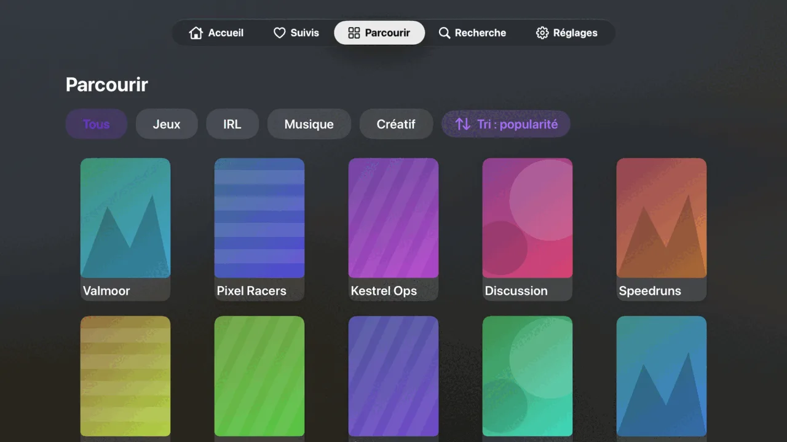
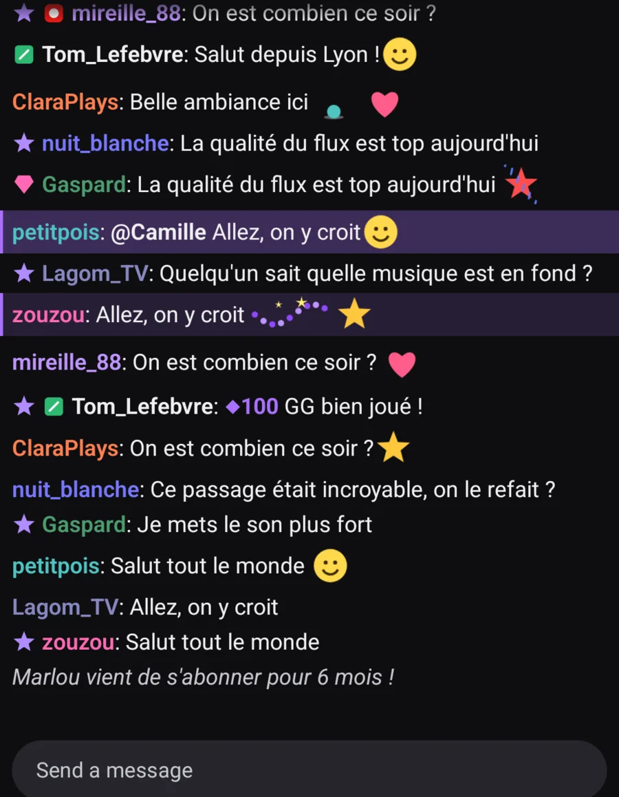

Twitch, native on every screen you own.
Skerry is an open-source client for Android, iPhone, Mac and Apple TV. Real native lists, real native chat, one shared Kotlin core.
Unofficial. Not affiliated with Twitch. Apache-2.0.



One app, built for each screen.
Not a web view in a wrapper. Each platform gets its own UI, and all of them run the same logic underneath. Every screenshot here shows the built-in demo mode: fictional channels, fictional chat, a test pattern for video.
Jetpack Compose, Material 3.
Home, Browse, Search, channel pages, replays and clips. Streams play in a drag-to-expand player with chat, fullscreen and Picture-in-Picture.
- Dark and light themes, large-text and right-to-left layouts checked.
- R8 full mode with a Baseline Profile, so it starts fast.






SwiftUI, with a sheet that follows your thumb.
The player is a draggable sheet that collapses to a mini strip, the way a music app does, so you keep browsing while a stream plays.
- Liquid Glass tab bar and controls.
- The same presenters as Android, rendered in Swift.
A real Mac window.
Sidebar navigation, a resizable chat column next to the video, a floating mini player, and an emote picker that opens as a popover.


Made for the remote.
Focus, not touch: every screen is built around the D-pad or the Siri Remote, with Back behaving the way the platform expects. The Android TV app also plays Twitch's official embedded player by default.

Apple TV shown. Android TV screenshots will be added.

Chat that keeps up.
Chat is drawn natively, not scraped into a web page. Badges, replies, highlighted mentions, subscription notices and emotes from 7TV, BetterTTV and FrankerFaceZ, including animated and zero-width ones.
- Connects through Twitch's documented EventSub chat interface.
- A "back to live" pill when you scroll up, so a busy chat never fights you.
- Stress-tested in demo mode at around 16 messages a second.
One Kotlin core. Five native UIs.
The logic is written once in Kotlin Multiplatform and shared. The screens are written natively, and only render state.
StateFlow<UiState>onEvent(…)Shared code may not touch Android or java.* APIs. A Gradle check fails the build if it does.
Translations are generated into each app at build time. Right-to-left layouts are supported.
Startup and frame timing are tracked with Macrobenchmark, with numbers kept in the repository.
The fine print, up front.
Skerry is unofficial. It is not affiliated with, endorsed by, or sponsored by Twitch Interactive, Inc. or Amazon. Twitch and the Twitch logo are trademarks of their owners, and Skerry uses none of Twitch's logos or emotes.
Official video is the default. On Android TV, video plays in Twitch's own embedded player with its controls and ads untouched. Sign-in, lists and chat use Twitch's documented APIs.
Native playback is opt-in and may break Twitch's rules. The optional native player reads Twitch's undocumented playback interfaces. This repository ships no key for it, so it only runs if you build the app and supply your own, at your own risk. Ads are never skipped or hidden.
Read the legal notice · Privacy: no account, no analytics, no server.
Build it yourself.
You need JDK 21 and the Android SDK. Turn on demo mode and the apps run with no account and no network, so you can see every screen straight away.
Apple apps build with Xcode and XcodeGen on top of the same shared framework. The README and apple/README.md cover it.
# set up
cp local.properties.example local.properties
# phone app, then install on a device or emulator
./gradlew :phone:assembleDebug
ANDROID_SERIAL=emulator-5554 ./gradlew :phone:installDebug
# fictional channels, no account, no network
adb shell run-as com.twitchplayer.phone touch files/demo
# everything CI checks
./gradlew check